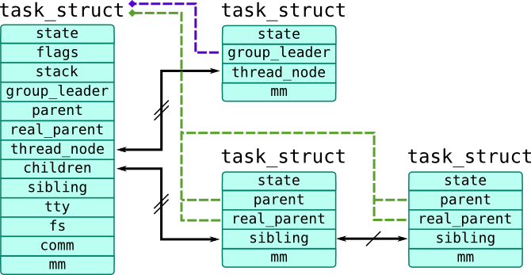
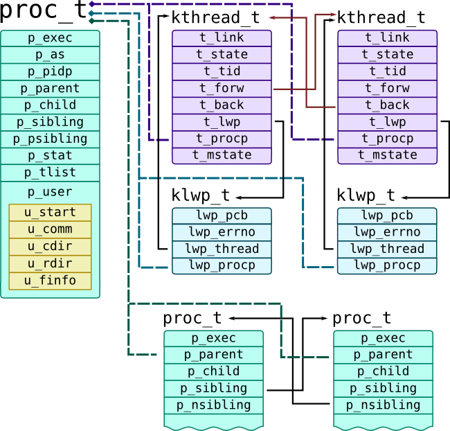

Process management
DefinitionAll the runnable software on the computer, sometimes including the operating system, is organized into a number of sequential processes, or just processes for short. A process is just an instance of an executing program, including the current values of the program counter, registers, and variables.
Process tree in Linux
Processes and threads are implemented through universal task_struct structure (defined in include/linux/sched.h), so we will refer in our book as tasks. First thread in process is called task group leader and all other threads are linked through list node thread_node list head and contain pointer group_leader which references task_struct of their process. Children processes refer to parent process through parent pointer and linked through sibling list node. Parent process linked with its children using children list head.

Task which is currently executed on CPU is accessible through current macro which actually calls function to get task from run-queue of CPU where it is called. To get current pointer in SystemTap, use task_current(). You can also get pointer to a task_struct using pid2task() function which accepts PID as its first argument. Task tapset provides several functions similar for functions used as Probe Context. They all get pointer to a task_struct as their argument:
-
task_pid()andtask_tid()-- ID of the process ID (stored intgidfield) and thread (stored inpidfield) respectively. Note that kernel most of the kernel code doesn't check cachedpidandtgidbut use namespace wrappers.
-
task_parent()-- returns pointer to a parent process, stored inparent/real_parentfields
-
task_state()-- returns state bitmask stored instate, such asTASK_RUNNING(0),TASK_INTERRUPTIBLE(1),TASK_UNINTTERRUPTIBLE(2). Last 2 values are for sleeping or waiting tasks -- the difference that only interruptible tasks may receive signals.
-
task_execname()-- reads executable name fromcommfield, which stores base name of executable path. Note thatcommrespects symbolic links.
-
task_cpu()-- returns CPU to which task belongs
There are several other useful fields in task_struct:
-
mm(pointer tostruct mm_struct) refers to a address space of a process. For example,exe_file(pointer tostruct file) refers to executable file, whilearg_startandarg_endare addresses of first and last byte of argv passed to a process respectively
-
fs(pointer tostruct fs_struct) contains filesystem information:pathcontains working directory of a task,rootcontains root directory (alterable usingchrootsystem call)
-
start_timeandreal_start_time(represented asstruct timespecuntil 3.17, replaced withu64nanosecond timestamps) -- monotonic and real start time of a process.
-
files(pointer tostruct fs_struct) contains table of files opened by process
-
utimeandstime(cputime_t) contain amount of time spent by CPU in userspace and kernel respectively. They can be accessed through Task Time tapset.
Script dumptask.stp demonstrates how these fields may be useful to get information about current process.
/**
* taskdump.stp
*
* Prints information about current task once per second
* Extracts data from `task_struct`
*
* Tested on CentOS 7.0
*/
/**
* Structures `dentry` and `vfsmnt` were separate in older kernels.
* Newer kernels feature unified `path` structures that contain them both.
*
* SystemTap doesn't cache full path, so we have to use function task_dentry_path(),
* to get entire path in this manner:
* dentry = @cast(file, "file")->f_path->dentry;
* vfsmnt = @cast(file, "file")->f_path->mnt;
* return task_dentry_path(task, dentry, vfsmnt);
*
* Unfortunately, SystemTap has bug 16991, fixed in 2.6, so
* we limit output to a basename
*/
function file_path:string(task:long, file:long) {
if(@defined(@cast(file, "file")->f_vfsmnt))
return d_name(@cast(file, "file")->f_dentry);
return d_name(@cast(file, "file")->f_path->dentry);
}
function task_root_path:string(task:long, fs_ptr:long) {
if(@defined(@cast(fs_ptr, "fs_struct")->rootmnt))
return d_name(@cast(fs_ptr, "fs_struct")->root);
return d_name(@cast(fs_ptr, "fs_struct")->root->dentry);
}
function task_pwd_path:string(task:long, fs_ptr:long) {
if(@defined(@cast(fs_ptr, "fs_struct")->pwdmnt))
return d_name(@cast(fs_ptr, "fs_struct")->pwd);
return d_name(@cast(fs_ptr, "fs_struct")->pwd->dentry);
}
/**
* Prints exectuable file name from `mm->exe_file` */
function task_exefile(task:long, mm_ptr:long) {
if(mm_ptr) {
printf("\texe: %s\n",
file_path(task, @cast(mm_ptr, "mm_struct")->exe_file));
}
}
/**
* Prints root and current dir of a task */
function task_paths(task:long, fs_ptr:long) {
if(fs_ptr) {
printf("\troot: %s\n", task_root_path(task, fs_ptr));
printf("\tcwd: %s\n", task_pwd_path(task, fs_ptr));
}
}
/**
* Prints arguments vector. Arguments are copied into process memory (stack)
* and located in memory area (mm->arg_start; mm_arg_end), of the strings that
* separated with NULL-terminators, i.e.:
* +-----+----+-------------+----+
* | cat | \0 | /etc/passwd | \0 |
* +-----+----+-------------+----+
* ^ ^
* arg_start arg_end
*
* WARNING: This is only a demostration functions, use cmdline_*() functions
* instead
*
* NOTE: functions user_string* read from current address space
* To get arguments from other processes, use Embedded C and
* function that look like proc_pid_cmdline
*/
function task_args(mm_ptr:long) {
if(mm_ptr) {
arg_start = @cast(mm_ptr, "mm_struct")->arg_start;
arg_end = @cast(mm_ptr, "mm_struct")->arg_end;
if (arg_start != 0 && arg_end != 0)
{
len = arg_end - arg_start;
nr = 0;
/* Pick first argument */
arg = user_string2(arg_start, "");
while (len > 0)
{
printf("\targ%d: %s\n", nr, arg);
arg_len = strlen(arg);
arg_start += arg_len + 1;
len -= arg_len + 1;
nr++;
arg = user_string2(arg_start, "");
}
}
}
}
/**
* Returns file descriptor using fd
* NOTE: see pfiles.stp
*/
function task_fd_filp:long(files:long, fd:long) {
return @cast(files, "files_struct")->fdt->fd[fd];
}
function task_fds(task:long) {
task_files = @cast(task, "task_struct", "kernel")->files;
if(task_files) {
max_fds = task_max_file_handles(task);
for (fd = 0; fd < max_fds; fd++) {
filp = task_fd_filp(task_files, fd);
if(filp) {
printf("\tfile%d: %s\n", fd, file_path(task, filp));
}
}
}
}
/**
* Prints start time of a process in seconds
* start time - monotonic
* real start time - boot time based
*
* NOTE: This function assumes that `timespec` is used, but these
* variables were replaced with u64 in kernel 3.17
*/
function task_start_time_x(task:long) {
if(@defined(@cast(task, "task_struct", "kernel")
->start_time)) {
start_time_sec = @cast(task, "task_struct", "kernel")
->start_time->tv_sec;
real_time_sec = @cast(task, "task_struct", "kernel")
->real_time->tv_sec;
printf("\tstart time: %ds\t real start time: %ds\n", start_time_sec, real_time_sec);
}
else {
real_time_sec = @cast(task, "task_struct", "kernel")
->real_start_time->tv_sec;
printf("\treal start time: %ds\n", real_time_sec);
}
}
/**
* Prints scheduler stats */
function task_time_stats(task:long) {
user = @cast(task, "task_struct", "kernel")->utime;
kernel = @cast(task, "task_struct", "kernel")->stime;
printf("\tuser: %s\t kernel: %s\n", cputime_to_string(user), cputime_to_string(kernel));
}
function dump_task(task:long) {
task_mm = @cast(task, "task_struct", "kernel")->mm;
task_fs = @cast(task, "task_struct", "kernel")->fs;
printf("Task %p is %d@%d %s\n", task, task_pid(task), task_cpu(task), task_execname(task));
task_exefile(task, task_mm);
task_paths(task, task_fs);
task_args(task_mm);
task_fds(task);
task_start_time_x(task);
task_time_stats(task);
}
probe timer.s(1) {
dump_task(task_current());
}
Process tree in Solaris
Solaris Kernel distinguishes threads and processes: on low level all threads represented by kthread_t, which are presented to userspace as Light-Weight Processes (or LWPs) defined as klwp_t. One or multiple LWPs constitute a process proc_t. They all have references to each other, as shown on the following picture:

Current thread is passed as curthread built-in variable to probes. Solaris proc provider has lwpsinfo_t and psinfo_t providers that extract useful information from corresponding thread, process and LWP structures.
| Process | ||
psinfo_tfield |
proc_tfield |
Description |
p_exec |
vnode of executable file | |
p_as |
process address space | |
pr_pid |
In p_pid of type struct pid |
Information about process ID |
pr_uid, pr_gid, pr_euidpr_egid |
In p_cred of type struct cred |
User and group ID of a process |
p_stat |
Process state | |
pr_dmodel |
p_model |
Data model of a process (32- or 64- bits) |
pr_start |
p_user.u_start, p_mstart |
Start time of process, from epoch |
pr_fname |
p_user.u_comm |
Executable name |
p_user.p_cdir |
vnode of current process directory | |
p_user.p_rdir |
vnode of root process directory | |
For current process -- fds pseudo-array |
p_user.u_finfo |
Open file table |
| Thread / LWP | ||
lwpsinfo_tfield |
kthread_tfield |
Description |
pr_lwpid |
t_tid |
ID of thread/LWP |
pr_state (enumeration) or pr_sname (letter) |
t_state |
State of the thread -- one of SSLEEP for sleeping, SRUN for runnable thread, SONPROC for thread that is currently on process, SZOMB for zombie threads, SSTOP for stopped threads and SWAIT for threads that are waiting to be runnable. |
pr_stype |
If process is sleeping on synchronization object identifiable as wait channel (pr_wchan), this field contains type of that object, i.e.: SOBJ_MUTEX for mutexes and SOBJ_CV for condition variables |
|
t_mstate |
micro-state of thread (see also prstat -m) |
|
Parent process has p_child pointer that refers its first child, while list of children is doubly-linked list with p_sibling pointer (next) and p_psibling (previous) pointers. Each child contains p_parent pointer and p_ppid process ID which refers his parent. Threads of the process is also a doubly-linked list with t_forw (next) and t_prev pointers. Thread references corresponding LWP with t_lwp pointer and its process with t_procp pointer. LWP refers to a thread through lwp_thread pointer, and to a process through lwp_procp pointer.
The following script dumps information about current thread and process. Because DTrace doesn't support loops and conditions, it can read only first 9 files and 9 arguments and does that by generating multiple probes with preprocessor.
#!/usr/sbin/dtrace -qCs /** * dumptask.d * * Prints information about current task once per second * Contains macros to extract data from `kthread_t` and its siblings * Some parts use standard translators `psinfo_t` and `lwpsinfo_t*` * * Tested on Solaris 11.2 */ int argnum; void* argvec; string pargs[int]; int fdnum; uf_entry_t* fdlist; #define PSINFO(thread) xlate(thread->t_procp) #define LWPSINFO(thread) xlate (thread) #define PUSER(thread) thread->t_procp->p_user /** * Extract pointer depending on data model: 8 byte for 64-bit * programs and 4 bytes for 32-bit programs. */ #define DATAMODEL_ILP32 0x00100000 #define GETPTR(proc, array, idx) \ ((uintptr_t) ((proc->p_model == DATAMODEL_ILP32) \ ? ((uint32_t*) array)[idx] : ((uint64_t*) array)[idx])) #define GETPTRSIZE(proc) \ ((proc->p_model == DATAMODEL_ILP32)? 4 : 8) #define FILE(list, num) list[num].uf_file #define CLOCK_TO_MS(clk) (clk) * (`nsec_per_tick / 1000000) /* Helper to extract vnode path in safe manner */ #define VPATH(vn) \ ((vn) == NULL || (vn)->v_path == NULL) \ ? "unknown" : stringof((vn)->v_path) /* Prints process root - can be not `/` for zones */ #define DUMP_TASK_ROOT(thread) \ printf("\troot: %s\n", \ PUSER(thread).u_rdir == NULL \ ? "/" \ : VPATH(PUSER(thread).u_rdir)); /* Prints current working directory of a process */ #define DUMP_TASK_CWD(thread) \ printf("\tcwd: %s\n", \ VPATH(PUSER(thread).u_cdir)); /* Prints executable file of a process */ #define DUMP_TASK_EXEFILE(thread) \ printf("\texe: %s\n", \ VPATH(thread->t_procp->p_exec)); /* Copy up to 9 process arguments. We use `psinfo_t` tapset to get number of arguments, and copy pointers to them into `argvec` array, and strings into `pargs` array. See also kernel function `exec_args()` */ #define COPYARG(t, n) \ pargs[n] = (n < argnum && argvec != 0) \ ? copyinstr(GETPTR(t->t_procp, argvec, n)) : "???" #define DUMP_TASK_ARGS_START(thread) \ printf("\tpsargs: %s\n", PSINFO(thread)->pr_psargs); \ argnum = PSINFO(thread)->pr_argc; \ argvec = (PSINFO(thread)->pr_argv != 0) ? \ copyin(PSINFO(thread)->pr_argv, \ argnum * GETPTRSIZE(thread->t_procp)) : 0;\ COPYARG(thread, 0); COPYARG(thread, 1); COPYARG(thread, 2); \ COPYARG(thread, 3); COPYARG(thread, 4); COPYARG(thread, 5); \ COPYARG(thread, 6); COPYARG(thread, 7); COPYARG(thread, 8); /* Prints start time of process */ #define DUMP_TASK_START_TIME(thread) \ printf("\tstart time: %ums\n", \ (unsigned long) thread->t_procp->p_mstart / 1000000); /* Processor time used by a process. Only for conformance with dumptask.d, it is actually set when process exits */ #define DUMP_TASK_TIME_STATS(thread) \ printf("\tuser: %ldms\t kernel: %ldms\n", \ CLOCK_TO_MS(thread->t_procp->p_utime), \ CLOCK_TO_MS(thread->t_procp->p_stime)); #define DUMP_TASK_FDS_START(thread) \ fdlist = PUSER(thread).u_finfo.fi_list; \ fdcnt = 0; \ fdnum = PUSER(thread).u_finfo.fi_nfiles; #define DUMP_TASK(thread) \ printf("Task %p is %d/%d@%d %s\n", thread, \ PSINFO(thread)->pr_pid, \ LWPSINFO(thread)->pr_lwpid, \ LWPSINFO(thread)->pr_onpro, \ PUSER(thread).u_comm); \ DUMP_TASK_EXEFILE(thread) \ DUMP_TASK_ROOT(thread) \ DUMP_TASK_CWD(thread) \ DUMP_TASK_ARGS_START(thread) \ DUMP_TASK_FDS_START(thread) \ DUMP_TASK_START_TIME(thread) \ DUMP_TASK_TIME_STATS(thread) #define _DUMP_ARG_PROBE(probe, argi) \ probe /argi < argnum/ { \ printf("\targ%d: %s\n", argi, pargs[argi]); } #define DUMP_ARG_PROBE(probe) \ _DUMP_ARG_PROBE(probe, 0) _DUMP_ARG_PROBE(probe, 1) \ _DUMP_ARG_PROBE(probe, 2) _DUMP_ARG_PROBE(probe, 3) \ _DUMP_ARG_PROBE(probe, 4) _DUMP_ARG_PROBE(probe, 5) \ _DUMP_ARG_PROBE(probe, 6) _DUMP_ARG_PROBE(probe, 7) \ _DUMP_ARG_PROBE(probe, 8) /* Dumps path to file if it opened */ #define _DUMP_FILE_PROBE(probe, fd) \ probe /fd < fdnum && FILE(fdlist, fd)/ { \ printf("\tfile%d: %s\n", fd, \ VPATH(FILE(fdlist, fd)->f_vnode)); } #define DUMP_FILE_PROBE(probe) \ _DUMP_FILE_PROBE(probe, 0) _DUMP_FILE_PROBE(probe, 1) \ _DUMP_FILE_PROBE(probe, 2) _DUMP_FILE_PROBE(probe, 3) \ _DUMP_FILE_PROBE(probe, 4) _DUMP_FILE_PROBE(probe, 5) \ _DUMP_FILE_PROBE(probe, 6) _DUMP_FILE_PROBE(probe, 7) BEGIN { proc = 0; argnum = 0; fdnum = 0; } tick-1s { DUMP_TASK(curthread); } DUMP_ARG_PROBE(tick-1s) DUMP_FILE_PROBE(tick-1s)
psinfo_t provider features pr_psargs field that contains first 80 characters of process arguments. This script uses direct extraction of arguments only for demonstration purposes and to be conformant with dumptask.stp. Like in SystemTap case, this approach doesn't allow to read non-current process arguments.
Lifetime of a process
Lifetime of a process and corresponding probes are shown in the following image:

Unlike Windows, in Unix process is spawned in two stages:
-
Parent process calls
fork()system call. Kernel creates exact copy of a parent process including address space (which is available in copy-on-write mode) and open files, and gives it a new PID. Iffork()was successful, it will return in the context of two processes (parent and child), with the same instruction pointer. Following code usually closes files in child, resets signals, etc.
-
Child process calls
execve()system call, which replaces address space of a process with a new one based on binary which is passed toexecve()call.
vfork(), which will not cause copying of an address space, which will make it a bit more efficient. Linux features universal clone() call which allow to choose which features of a process should be cloned, but in the end, all these calls are wrappers for do_fork() function.
When child process finishes its job, it will call exit() system call. However, process may be killed by a kernel due to incorrect condition (like triggering kernel oops) or machine fault. If parent wants to wait until child process finishes, it will call wait() system call (or waitid() and similar calls), which will stop parent from executing until child exits.wait() call also receive process exit code, so only after that corresponding task_struct will be destroyed. If no process waited on a child, and child is exited, it will be treated as zombie process. Parent process may be also notified by kernel with SIGCHLD signal.
Processes may be traced with kprocess and scheduler tapsets in SystemTap, or DTrace proc provider. System calls may be traced with appropriate probes too. Here are some useful probes:
| Action | DTrace | SystemTap |
| Process creation |
proc:::create |
|
| Forked process begins its execution |
|
|
execve() |
|
|
| Process finished |
|
|
Process structures deallocated due to wait()/SIGCHLD |
- |
|
| LWP management |
|
LWPs are not supported in Linux |
These probes are demonstrated in the following scripts.
#!/usr/bin/stap
probe scheduler.process*, scheduler.wakeup_new, syscall.fork,
syscall.exec*, syscall.exit, syscall.wait*, kprocess.* {
printf("%6d[%8s]/%6d[%8s] %s\n",
pid(), execname(), ppid(), pid2execname(ppid()), pn());
}
probe scheduler.process_fork {
printf("\tPID: %d -> %d\n", parent_pid, child_pid);
}
probe kprocess.exec {
printf("\tfilename: %s\n", filename);
}
probe kprocess.exit {
printf("\treturn code: %d\n", code);
}
Running this script for uname program called in foreground of bash shell gives following output:
2578[ bash]/ 2576[ sshd] syscall.fork
2578[ bash]/ 2576[ sshd] kprocess.create
2578[ bash]/ 2576[ sshd] scheduler.process_fork
PID: 2578 -> 3342
2578[ bash]/ 2576[ sshd] scheduler.wakeup_new
3342[ bash]/ 2578[ bash] kprocess.start
2578[ bash]/ 2576[ sshd] syscall.wait4
2578[ bash]/ 2576[ sshd] scheduler.process_wait
filename: /bin/uname
3342[ bash]/ 2578[ bash] kprocess.exec
3342[ bash]/ 2578[ bash] syscall.execve
3342[ uname]/ 2578[ bash] kprocess.exec_complete
return code: 0
3342[ uname]/ 2578[ bash] kprocess.exit
3342[ uname]/ 2578[ bash] syscall.exit
3342[ uname]/ 2578[ bash] scheduler.process_exit
2578[ bash]/ 2576[ sshd] kprocess.release
#!/usr/sbin/dtrace -qCs
#define PARENT_EXECNAME(thread) \
(thread->t_procp->p_parent != NULL) \
? stringof(thread->t_procp->p_parent->p_user.u_comm) \
: "???"
proc:::, syscall::fork*:entry, syscall::exec*:entry,
syscall::wait*:entry {
printf("%6d[%8s]/%6d[%8s] %s::%s:%s\n",
pid, execname, ppid, PARENT_EXECNAME(curthread),
probeprov, probefunc, probename);
}
proc:::create {
printf("\tPID: %d -> %d\n", curpsinfo->pr_pid, args[0]->pr_pid);
}
proc:::exec {
printf("\tfilename: %s\n", args[0]);
}
proc:::exit {
printf("\treturn code: %d\n", args[0]);
}
DTrace will give similar outputs, but also will reveal LWP creation/destruction:
16729[ bash]/ 16728[ sshd] syscall::forksys:entry
16729[ bash]/ 16728[ sshd] proc::lwp_create:lwp-create
16729[ bash]/ 16728[ sshd] proc::cfork:create
PID: 16729 -> 17156
16729[ bash]/ 16728[ sshd] syscall::waitsys:entry
17156[ bash]/ 16729[ bash] proc::lwp_rtt_initial:start
17156[ bash]/ 16729[ bash] proc::lwp_rtt_initial:lwp-start
17156[ bash]/ 16729[ bash] syscall::exece:entry
17156[ bash]/ 16729[ bash] proc::exec_common:exec
filename: /usr/sbin/uname
17156[ uname]/ 16729[ bash] proc::exec_common:exec-success
17156[ uname]/ 16729[ bash] proc::proc_exit:lwp-exit
17156[ uname]/ 16729[ bash] proc::proc_exit:exit
return code: 1
0[ sched]/ 0[ ???] proc::sigtoproc:signal-send
References